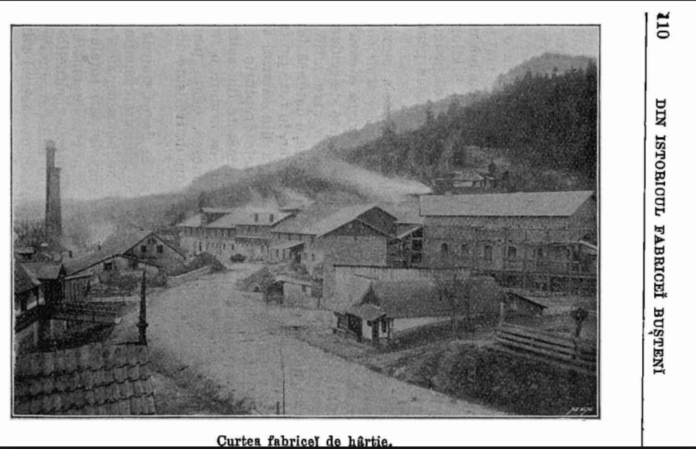

Bucegii au puține bogății naturale, folosindu-se pentru
piatră de construcții sau fiind folosiți ca pășuni pentru oi,
parte din transhumanță.
- exploatări forestiere, Fabrica de hârtie Bușteni - desființată în 2008
- calcare, cariera Lespezi ce alimentează Combinatul de la Fieni
- calcare, în 1878 Azuga avea o fabrica de var
- ape, 1899 fabrica de bere Azuga (în prezent închisă)
